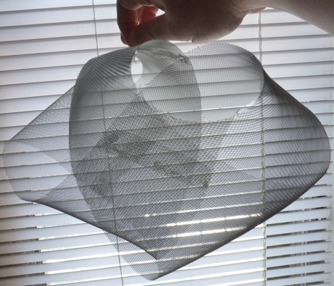
A A R O N H O P E
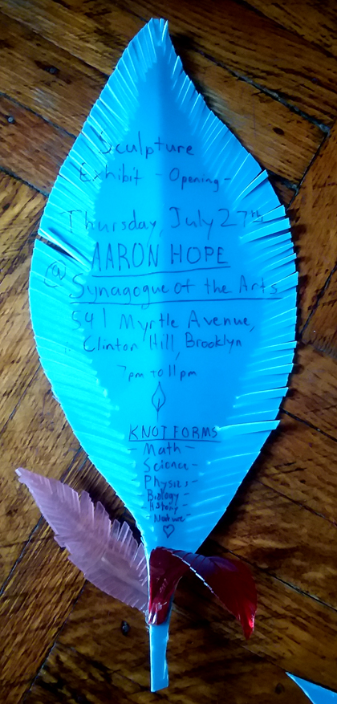
Come find me and see exciting new work Thursday evening, July 27th, 2017!
7pm to 9pm @Hadas Gallery, 541 Myrtle Avenue
in Clinton Hill, Brooklyn
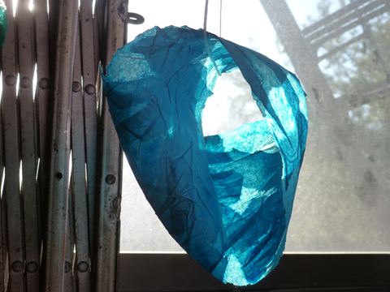
'Mobius Wave', Paper Mache
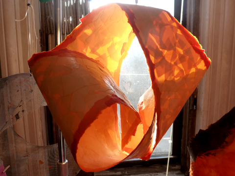
'Solar Knot', Paper Mache
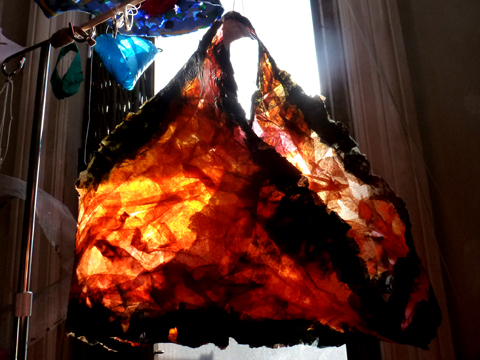
'Light Fireplace', Paper Mache
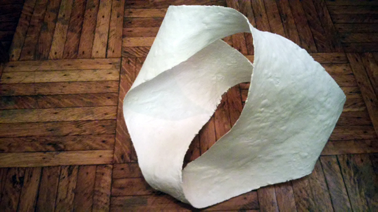
'Anti-Symmetry', Metal and Plaster
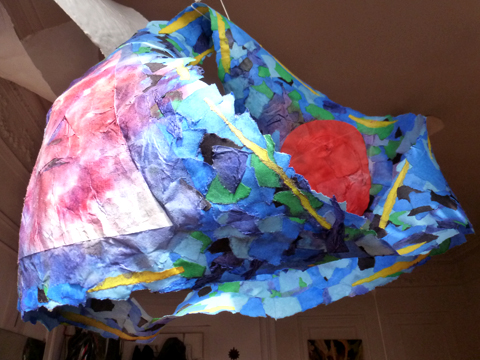
'Hearts and Arrowheads Knot', Collaboration with Shiva, Paper Mache
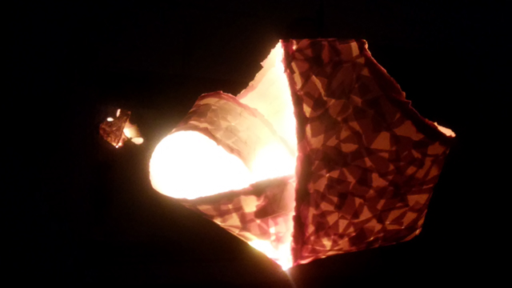
'Solar Knot', Paper Mache and LED
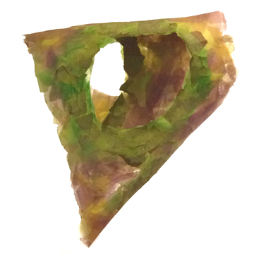
'Verdure Mobius', Paper Mache
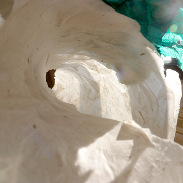
WHY KNOT ?
Work here is inspired by circular forms found everywhere in nature and studied in mathematics.
Knot theory is the field of mathematics studying the looped shapes of things like our DNA strands, tied shoelaces, string theory, and even the shapes of organisms. All works here are one-sided, continuous surfaces bounded by a circle in space; Such that an ant could crawl across the entire 3d surface without crossing over an edge. The most common example of this type of shape is a Mobius strip.
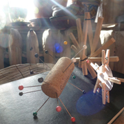
Aaron Hope is a New York, NY based artist, building preservationist, and water resource advocate.
Email: Aaron@knotform.com